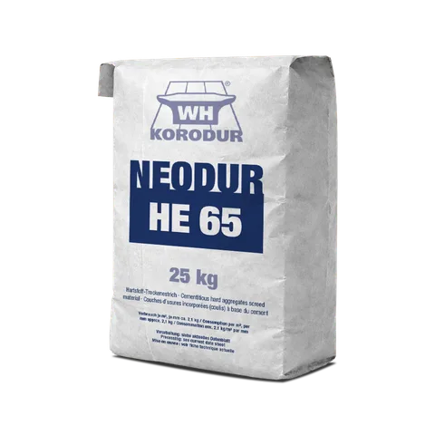
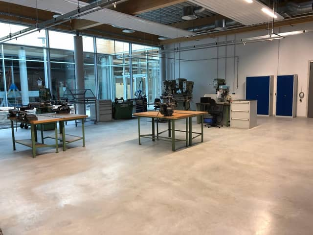
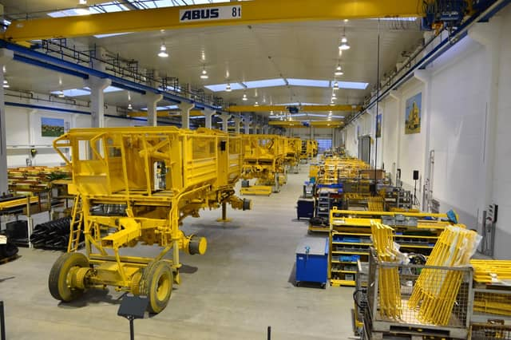
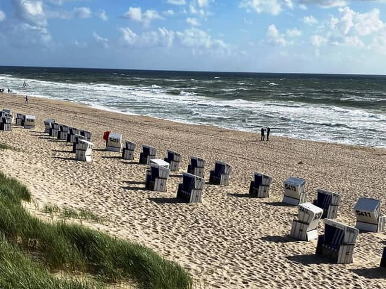
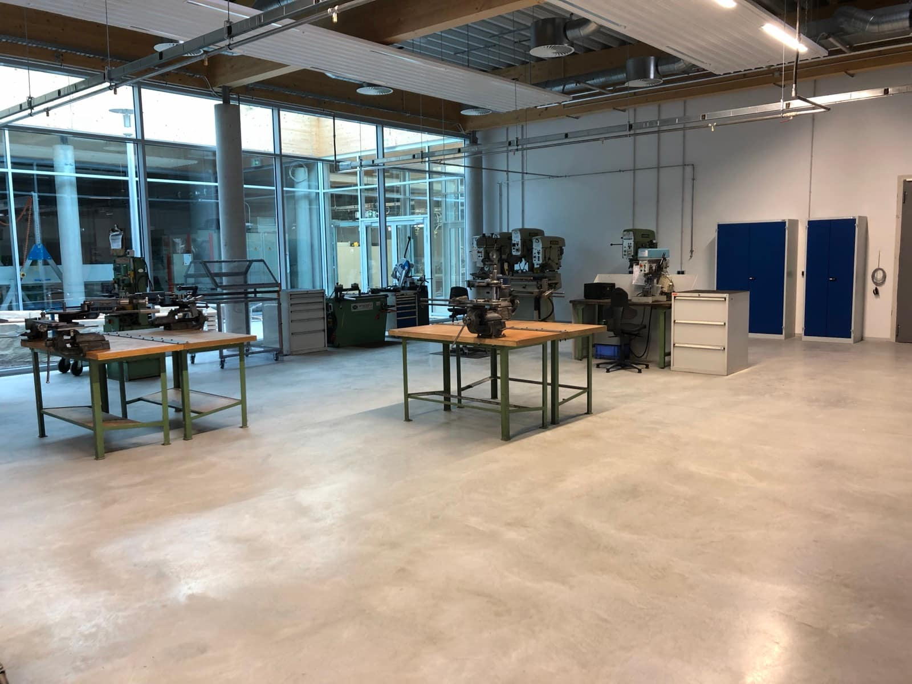

Neuer Aufbau der Produkt-Detailseite mit echten HE-65-Daten und echten Fotos. Die n-Marker im Layout zeigen die 11 Änderungen ggü. der aktuellen Live-Seite. Kopfbereich (Titel, „Was ist es", Beschreibung, Doc-Link) bleibt inhaltlich unverändert.
NEODUR HE 65 ist ein gebrauchsfertiger, zementgebundener Hartstoffestrich auf Basis von KORODUR VS 0/5. Einschichtig als Verbundestrich für höchste Belastungen gem. DIN 18560-7, auch farbig lieferbar. Für hochbeanspruchbare Industrieböden mit stärkster Beanspruchung.
Technische Dokumente →



| Qualität | Basis-Hartstoff | Klasse | Schwerpunkt | |
|---|---|---|---|---|
| ●NEODUR HE 65 (aktuell) | KORODUR Hartstoff | CT-C70-F9-A6 | Standard, höchste Belastung | |
| NEODUR HE 65 Plus | KORODUR Hartstoff | CT-C70-F9-A6 | Ohne Haftbrücke, frost-/tausalzbeständig, WHG | öffnen → |
| NEODUR HE 65 SVS 3 | KORODUR Hartstoff | CT-C70-F9-A3 | Höhere Verschleißklasse (A3) | öffnen → |
| NEODUR HE 65 SVS 1,5 | KORODUR Hartstoff | CT-C70-F9-A1,5 | Höchster Abrieb (A1,5) | öffnen → |
| NEODUR HE 65 metallisch | KORODUR Hartstoff | CT-C80-F11-A3 | Panzerestrich, Eisenräderverkehr | öffnen → |
| NEODUR HE 65 Plus SVS 3 | KORODUR Hartstoff | CT-C70-F9-A3 | Plus + Verschleißklasse A3 | öffnen → |
Mineralische Haftbrücke für den Verbund auf erhärtetem Tragbeton.
Nachbehandlungsmittel zur kontrollierten Aushärtung.
Nachbehandlung / Oberflächenverkieselung.
Hamburg-Finkenwerder · 20.000 m²
Herrngiersdorf

Amberg · ~4.500 m²
Unsere Technik berät Sie zu Aufbau, Verarbeitung und passender Qualität.
Kontakt aufnehmen